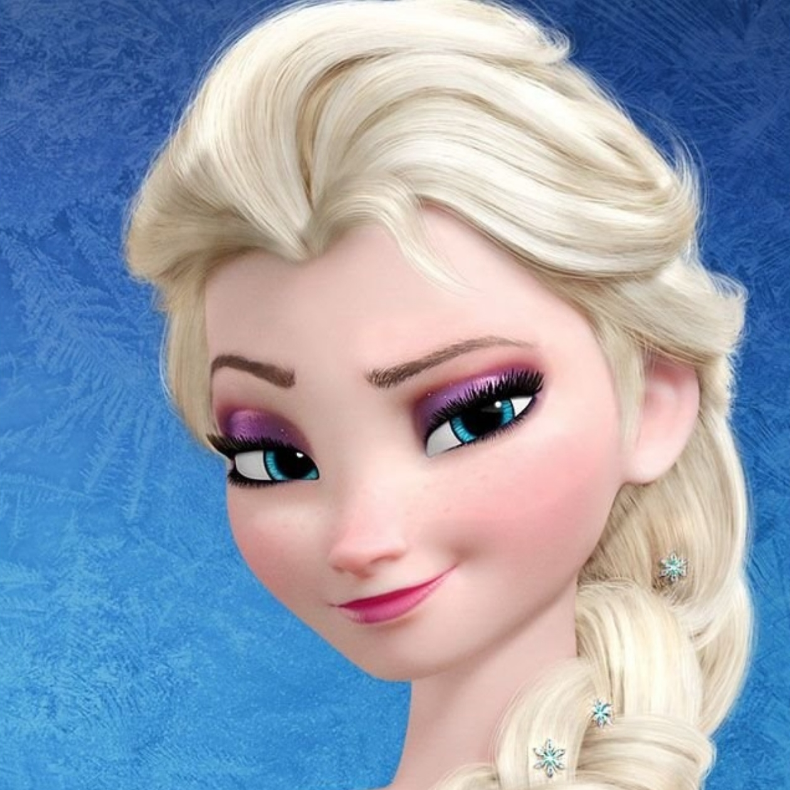
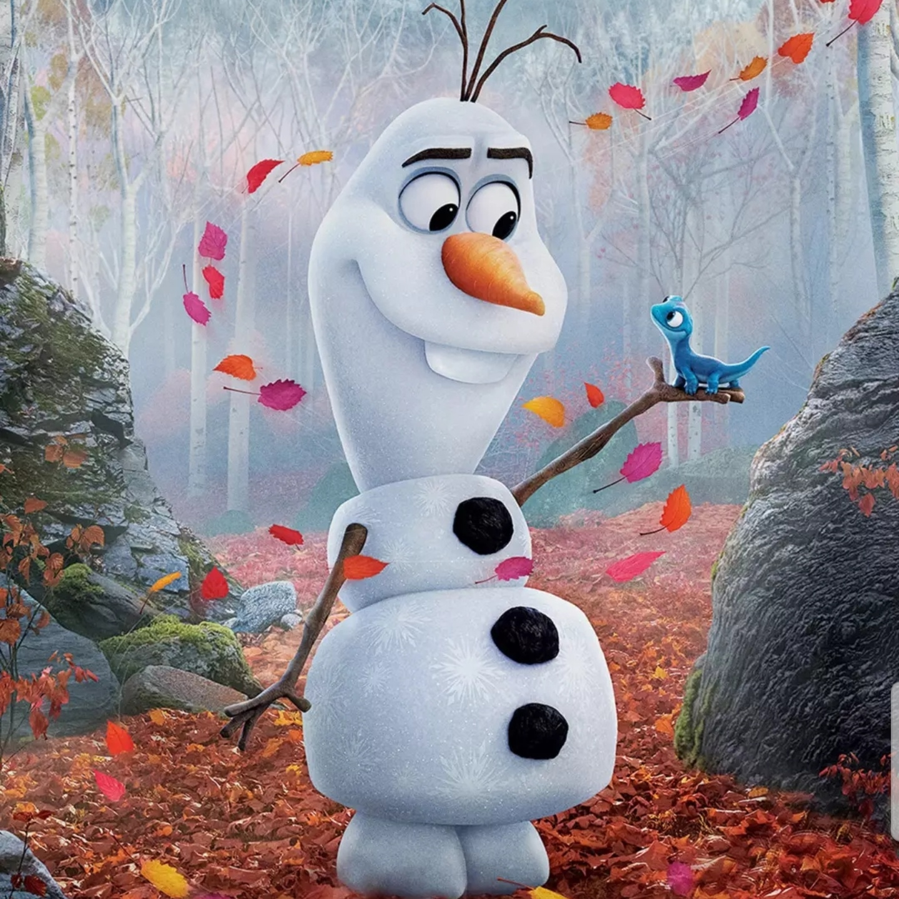
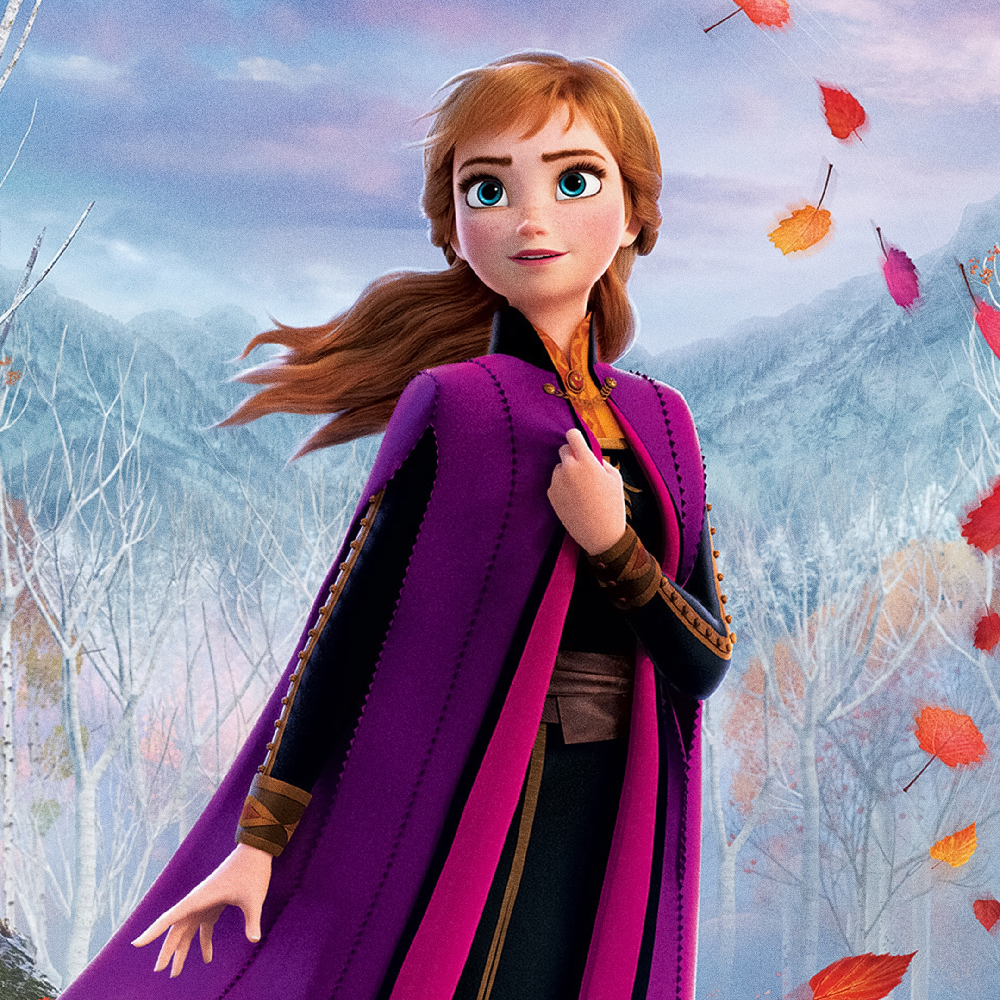

Когда сбывается древнее предсказание, и королевство погружается в объятия вечной зимы, трое бесстрашных героев — принцесса Анна, отважный Кристофф и его верный олень Свен — отправляются в горы, чтобы найти сестру Анны, Эльзу, которая может снять со страны леденящее заклятие. По пути их ждет множество увлекательных сюрпризов и захватывающих приключений: встреча с мистическими троллями, знакомство с очаровательным снеговиком по имени Олаф, горные вершины покруче Эвереста и магия в каждой снежинке. Анне и Кристоффу предстоит сплотиться и противостоять могучей стихии.
Когда сбывается древнее предсказание, и королевство погружается в объятия вечной зимы, трое бесстрашных героев — принцесса Анна, отважный Кристофф и его верный олень Свен — отправляются в горы, чтобы найти сестру Анны.